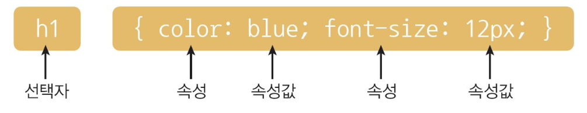
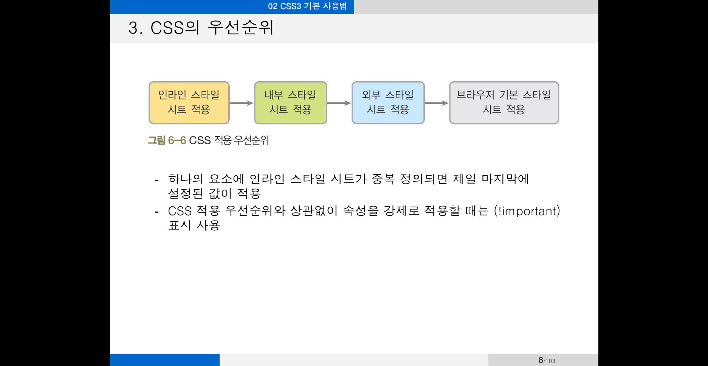

CSS란?
웹 페이지의 스타일과 내용적인 부분을
서로 분리해서 내용에 디자인을 적용하기 위해
작성하는 서식을 의미
문서작성과 디자인을 분리하는 이유
- 협업, 스타일 변경시 유지보수 용이
- 태그만으로 구현할 수 없는 기능 수행
- 캐시를 이용한 전송 및 로딩 시간 단축
CSS의 발전사
CSS1 : 1996, CSS2 : 1998, CSS3: 2005
CSS3 문법

선택자selector : 스타일을 적용하고자 하는 대상(html요소)을 의미
선언블록 : 하나 이상의 css 선언문을 의미, 선언문은 보통 속성과 속성값으로 구성,
각 선언문은 ;으로 구분
속성 : 스타일을 설정할 수 있는 항목을 의미
속성값 : 스타일에 적용가능한 키워드나 단위를 의미
CSS 사용위치
- 인라인 스타일시트 : html 요소 내에 style이라는
속성을 사용해서 CSS 스타일을 적용하는 방법 (국지적 스타일 적용 : 특정 요소 대상)
- 내부 스타일시트 : html문서의 head 태그 내에
style이라는 태그를 사용해서 CSS 스타일을 적용하는 방법(지역적 스타일 적용 : 특정 파일 대상)
- 외부 스타일시트: html문서의 head 태그 내에
link이라는 태그를 사용해서 외부 css파일을 통해
CSS 스타일을 적용하는 방법 (추천!)(전역적 스타일 적용 : 여러 파일 대상)
시간은 금이라구, 친구!!
시간은 금이라구, 친구!!
시간은 금이라구, 친구!!
CSS 우선순위

스타일 적용 원칙은 cascading 이라는 용어 처럼 위에서 아래로 순서대로
순차적으로 반영됨 (선언된 순서에 영향을 받기도 함 물론 !important로 무시 가능)